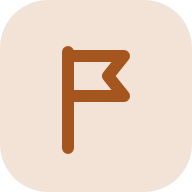

הרוח מסובבת
הרוח דוחפת את הלהבים והם מסתובבים, כמו סביבון נייר. הלהבים מסובבים ציר, והציר מסובב מחולל. זה אותו מחולל מתחנה 1!
תחנה 2
האם הרוח של אי האלמוג יכולה להאיר את הכפר?
בתחנה הזו תלמדו:
על שולחן המועצה פרושה מפה ישנה של אי האלמוג. מעליה שרבטו הדייגים חצים בעיפרון. במשך דורות הם סימנו בה מאיפה נושבת הרוח וכמה היא חזקה, כדי לדעת מתי בטוח לצאת לדוג. נעמה מעבירה אצבע על רכס הרוחות, הגבעה הגבוהה שבמערב האי. שם החצים הכי עבים. אף אחד לא בונה שם בית, כי הרוח שם חזקה כל כך שאפילו העצים גדלים עקומים. פתאום נעמה מחייכת. "מה שמפריע לבנות בית", היא אומרת, "אולי דווקא מתאים למשהו אחר."
נעמה אומרת: "באי שלנו יש הרבה רוח, בעיקר על רכס הרוחות. אולי הרוח תסובב לנו מחולל?"
לפני הצפייה: שימו לב: איפה נמצא המחולל בטורבינת הרוח?
נסו: עברו על ארבעת מצבי הרוח ורשמו את המד בכל אחד.
| מהירות הרוח | מד חשמל (0–10) |
|---|---|
| שקט | |
| בריזה | |
| רוח חזקה | |
| סערה |
מה קרה ללהבים בסערה? האם הם המשיכו להסתובב?
חזרו לכרטיס 3 בחלק "מה צריך לדעת".
רוח חזקה יותר מייצרת יותר חשמל, עד גבול מסוים. בסערה עוצרים את הטורבינה כדי לשמור עליה.
נסו: שנו את כיוון הרוח. אחר כך לחצו "סובבו את הראש מול הרוח".
מתי הרוח דוחפת את הלהבים הכי טוב?
נסו להשלים: "הטורבינה מסתובבת כדי …"
נכון. הטורבינה מסתובבת מול הרוח, כדי שהרוח תפגע בלהבים ישר מקדימה.
נסו: גררו את הטורבינה לרכס הרוחות, לחוף ולעמק. בכל מקום לחצו "הפעילו ימה" וצפו בגרף.
מצאו בגרף שעות שבהן הקו הכחול נמוך מהקו הכתום.
מה הכפר עושה בשעות האלה?
רכס הרוחות הוא המקום הטוב ביותר. אבל גם שם יש שעות בלי רוח. רשמו לעצמכם: טורבינות רוח לבד לא יספיקו לאי.
מטרה: לבדוק איך חוזק הרוח משפיע על העבודה שטורבינה יכולה לעשות.
| מרחק מהמאוורר | זמן הרמה, מדידה 1 | זמן הרמה, מדידה 2 |
|---|---|---|
| 100 ס״מ (רוח חלשה) | ||
| 50 ס״מ | ||
| 25 ס״מ (רוח חזקה) |
כאן הרוח מסובבת את המחולל. זה נקי ולא נגמר, אבל רק כשיש רוח.

סיימתם? עכשיו מדווחים למועצה. פתחו את המשימה "נקודת ביקורת: טורבינת רוח" ב-Classroom. זה ייקח כ-10 דקות.
לרוב הטורבינות הגדולות יש שלושה להבים. בניסוי בידיים, נסו טורבינה עם 2, 3 ו-6 להבים, באותו מרחק מהמאוורר. מה גיליתם? ציירו להב משופר.